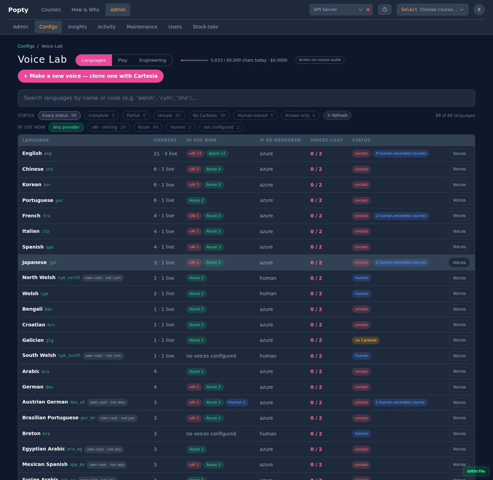

watson-1, deployed a989cf6ee, 2026-08-31. Same 88 rows, same totals.
| before | after | |
|---|---|---|
| DB queries per load | 5 | 5 cold, 0 warm |
| bytes over the wire | 656,720 | 18,323 |
| request, over the funnel | 0.48–4.15 s | 0.17 s |
| request, real browser | 531–1,957 ms | 194–237 ms |
| /voicelab/params bytes | 290,823 | 2,704 |
